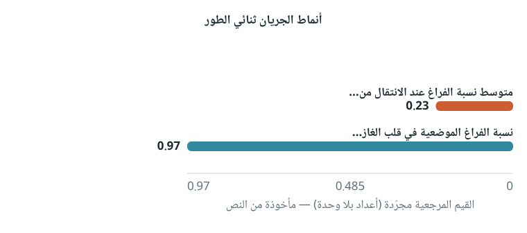

أنماط الجريان ثنائي الطور
Two-Phase Flow Regimes
أشكال توزّع الغاز والسائل داخل الأنبوب حين يجريان معًا: فقاعات منفصلة، أو سُدَد متبادلة، أو طبقات منفصلة، أو غلاف سائل حول قلب غازي؛ ولكل نمط معادلات ضغط وحرارة خاصة به.
حين يجري غاز وسائل في أنبوب واحد لا يتوزّعان توزيعًا واحدًا، بل يتّخذ التوزيع شكلًا يتغيّر مع السرعات والكثافات والتوتر السطحي وقطر الأنبوب ووضعه (أفقي أو رأسي). هذه الأشكال هي أنماط الجريان، وهي أهم ما يجب تحديده قبل حساب هبوط الضغط أو انتقال الحرارة في أي نظام ثنائي الطور: تبخير، أو مكثّف، أو مفاعل، أو خطوط نقل نفط وغاز، أو غلاية. الأنماط الرئيسة في الأنبوب الرأسي الصاعد: وفقاعي (bubbly) حيث فقاعات متفرّقة في سائل متصل، ثم سُدَدية (slug) حيث تتجمّع الفقاعات في سُدَد تفصلها حزم سائل، ثم انتفاخية (churn) حيث تتحطّم السُّدَد وتضطرب السطح البيني، ثم حلقية (annular) حيث يصير الغاز قلبًا متصلًا والسائل غلافًا على الجدار، وقد يظهر فيه قطرات محمولة. وفي الأنبوب الأفقي تُضاف أنماط الطبقات ( stratified) والموجات (wavy) والسُّدَدية والقطرات لأن الجاذبية تفصل الطورين، ويُعرَّف الفاصل بينها بخرائط تجريبية مثل خريطة Baker وخريطة Hewitt وRoberts وتعديلات Taitel وDukler. ومفتاح القراءة أن الغاز الأخف يسبق السائل حين ترتفع سرعته: كلما زادت السرعة الظاهرية للغاز انتقل النظام من وفقاعي إلى سُدَدي إلى حلقي، وكلما زادت سرعة السائل اتّجه إلى التشتت والانتظام.
كيف تعمل الظاهرة؟
تتنازع ثلاثة مؤثرات توزيعَ الطورين: الجاذبية التي تفصل الأخف عن الأثقل، والقصور الذاتي (الطاقة الحركية للتدفق) الذي يخلط ويكسر الفاصل، والتوتر السطحي الذي يحاول أن يُبقي الفقاعات كروية والغشاء متماسكًا. حين تغلب الجاذبية في الأفقي تستقر طبقة غاز فوق السائل، وحين تغلب القصور الذاتي تتفتّت الطبقة إلى سُدَد ثم إلى قطرات، وحين يغلب التوتر السطحي في أنابيب ضيقة تبقى الفقاعات منفصلة حتى سرعات أعلى. وقطر الأنبوب يدخل في المعادلة لأن نسبة مساحة الجدار إلى الحجم تتغيّر معه، وميل الأنبوب يعيد توزيع تأثير الجاذبية.
العلاقة بالأرقام
تُقرأ الأنماط على خرائط تجريبية، وأشهرها خريطة Baker وخريطة Hewitt وRoberts وتعديلات Taitel وDukler، ومحوراها السرعتان الظاهريتان للطورين أو أرقام لا بُعدية مشتقة منهما. والأرقام تخصّ نظامًا وقطرًا محددين: في الدراسة المنشورة على قناة مستطيلة حلزونية أفقية كان الانتقال الفقاعي/المتقطّع عند متوسط نسبة فراغ 0.23، وعُرّف الحلقي عند نسبة فراغ موضعية في قلب الغاز تتجاوز 0.97، ونطاق التشغيل 0.09–2 م/ث للسائل و0.18–16 م/ث للغاز. أي أن الرقم ليس ثابتًا عالميًّا بل مقترنًا بهندسة التجربة.
مفاهيم متقاربة
الخطأ الشائع أن يُحسب الأنبوب بمعادلة الطور الواحد ثم يُقال إنه ثنائي الطور: فمعادلات هبوط الضغط وانتقال الحرارة تختلف بين الأنماط اختلافًا جوهريًّا، لأن مساحة التلامس وحالة الجدار تتغيّران. والثاني أن يُنقل حدّ الانتقال من خريطة إلى أنبوب بقطر أو ميل مختلف بلا تحقّق. والثالث أن يُخلط بين النمط وبين توزيع الطور العددي (نسبة الفراغ)؛ فالنسبة تصف الكمّ والنمط يصف الشكل، وقد تتساوى نسبتان في نمطين مختلفين.
حدود التطبيق
خرائط الأنماط تجريبية لا نظرية، وحدودها تتغيّر مع الخواص والقطر والميل والضغط، وأكثرها بُني على الهواء والماء في أنابيب صغيرة معتدلة الضغط؛ وتطبيقها على سوائل لزجة أو ضغوط عالية أو مقاطع غير دائرية يحتاج تحقّقًا مستقلًّا. كما أن الأنماط العابرة والانتقالات غير المستقرة (نبضية) لا تُقرأ من خريطة ثابتة، وهي حالة شائعة في التشغيل الجزئي وفي خطوط النقل الطويلة.

| الكمية | القيمة | المصدر |
|---|---|---|
| متوسط نسبة الفراغ عند الانتقال من الجريان الفقاعي إلى المتقطّع (قناة مستطيلة حلزونية أفقية، هواء-ماء) | 0.23 — | [2] |
| نسبة الفراغ الموضعية في قلب الغاز التي يُعرَّف بها الجريان الحلقي في الدراسة نفسها | 0.97 — | [2] |
| الحدّ الأعلى للسرعة الظاهرية للسائل في نطاق الدراسة | 2 م/ث | [2] |
| الحدّ الأعلى للسرعة الظاهرية للغاز في نطاق الدراسة | 16 م/ث | [2] |
المصادر
- 1 Gas-Liquid Flow — Thermopedia (Begell House). www.thermopedia.com/content/2/ · اطُّلع عليه 2026-11-28
- 2 Flow Regime Visualization and Identification of Air-Water Two-Phase Flow in a Horizontal Helically Coiled Rectangular Channel (Cheng, Lixin · Heat Transfer Engineering 43(8-10), 2021) — Sheffield Hallam University Research Archive (SHURA). shura.shu.ac.uk/28397/3/Cheng-FlowRegimeVisualization%28AM%29.pdf · اطُّلع عليه 2026-11-28
استشهد بهذا المصطلح
الصيغتان مبنيتان من بيانات الصفحة نفسها: العنوان والتاريخ ورابط النسخة المنشورة.
أنماط الجريان ثنائي الطور — Two-Phase Flow Regimes. (2026). ديوان المعرفة — انفراد. https://infiradev.com/diwan/terms/term-two-phase-flow-regimes.html
@misc{term-two-phase-flow-regimes2026,
title = {أنماط الجريان ثنائي الطور},
titleaddon = {Two-Phase Flow Regimes},
howpublished = {{ديوان المعرفة — انفراد} — مرجع علمي عربي},
year = {2026},
url = {https://infiradev.com/diwan/terms/term-two-phase-flow-regimes.html},
urldate = {2026-11-28},
note = {مراجعة علمية: Abdullah Al-Huwaidi}
}
راجعه: Abdullah Al-Huwaidi · 2026-11-28 · آخر تحديث 2026-11-28